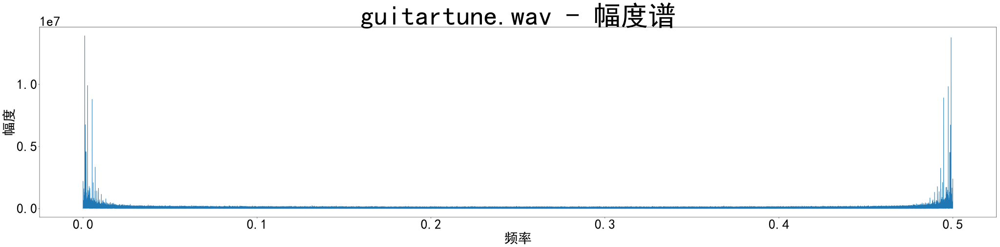

实验五 - 声音、图像的基本理解和 GMM 背景建模
学号
姓名
日期
1160300625
李一鸣
2018 年 11 月 30 日
信号的傅里叶变换及其幅度、相位
编程阅读一个 wav 音频文件和一幅灰度 bitmap 图像，然后对音频文件和灰度图像分别做离散傅里叶变换，画出其幅度和相位信息。
傅里叶变换
经傅里叶变换生成的函数 f ^ \hat{f} f ^ f f f f ^ \hat{f} f ^ f f f f f f f ^ \hat{f} f ^
『傅里叶变换』一词既指变换操作本身（将函数 f f f f ^ \hat{f} f ^ f f f
定义
连续傅里叶变换将可积函数 f : R → C f : \mathbb R \rightarrow \mathbb C f : R → C
负指数函数的积分：
(1) f ^ ( ξ ) = ∫ − ∞ ∞ f ( x ) e − 2 π i x ξ d x , ξ 为 任 意 实 数 \hat{f}(\xi) = \int_{-\infty}^{\infty}f(x)e^{-2\pi ix\xi}dx, \xi 为任意实数
\tag{1}
f ^ ( ξ ) = ∫ − ∞ ∞ f ( x ) e − 2 π i x ξ d x , ξ 为 任 意 实 数 ( 1 )
自变量 x x x ξ \xi ξ f ^ \hat{f} f ^ f f f
(2) f ( x ) = ∫ − ∞ ∞ f ^ ( ξ ) e 2 π i ξ x d ξ , x 为 任 意 实 数 f(x) = \int_{-\infty}^{\infty}\hat{f}(\xi)e^{2\pi i\xi x}d\xi, x 为任意实数
\tag{2}
f ( x ) = ∫ − ∞ ∞ f ^ ( ξ ) e 2 π i ξ x d ξ , x 为 任 意 实 数 ( 2 )
f f f f ^ \hat{f} f ^
傅里叶级数
连续形式的傅里叶变换其实是傅里叶级数（Fourier series）的推广，因为积分其实是一种极限形式的求和算子而已。对于周期函数，其傅里叶级数是存在的：
(3) f ( x ) = ∑ n = − ∞ ∞ F n e i n x
f(x) = \sum_{n=-\infty}^{\infty}F_ne^{inx}
\tag{3}
f ( x ) = n = − ∞ ∑ ∞ F n e i n x ( 3 )
其中 F n F_n F n
(4) f ( x ) = a 2 + ∑ n = 1 ∞ F n e i n x = a 2 + ∑ n = 1 ∞ [ a n cos n x + b n sin ( n x ) ] \begin{aligned}
f(x)
&= \frac{a}{2} + \sum_{n=1}^{\infty}F_ne^{inx} \\
&= \frac{a}{2} + \sum_{n=1}^{\infty}[a_n\cos{nx}+b_n\sin(nx)]
\end{aligned}
\tag{4}
f ( x ) = 2 a + n = 1 ∑ ∞ F n e i n x = 2 a + n = 1 ∑ ∞ [ a n cos n x + b n sin ( n x ) ] ( 4 )
对于周期为 L L L 2 π 2\pi 2 π
(5) f ( x ) = ∑ n = − ∞ ∞ F n e i 2 π n x / L f(x) = \sum_{n=-\infty}^{\infty}F_ne^{i2\pi nx/L}
\tag{5}
f ( x ) = n = − ∞ ∑ ∞ F n e i 2 π n x / L ( 5 )
将复数形式的傅里叶级数 ( 5 ) (5) ( 5 )
用 n L \frac{n}{L} L n x x x
将 F n F_n F n F ( k ) d k F(k)dk F ( k ) d k
将作和改为积分
就可以得到了连续型的 ( 2 ) (2) ( 2 )
The Fourier transform is a generalization of the complex Fourier series in the limit as L->infty. Replace the discrete A_n with the continuous F(k)dk while letting n/L->k. Then change the sum to an integral, and the equations become
离散傅里叶变换
离散傅里叶变换（Discrete Fourier Transform，缩写为 DFT）是离散时间傅里叶变换（DTFT）的特例，DTFT 在时域上离散，在频域上则是周期的。DTFT 可以被看做是傅里叶级数的逆转换。
将函数 x n x_n x n x n x_n x n
(6) x n = 1 N ∑ k = 0 N − 1 X k e i 2 π N k n , n = 0 , . . . , N − 1 x_n = \frac{1}{N}\sum_{k=0}^{N-1}X_ke^{i\frac{2\pi}{N}kn}, n = 0, ..., N-1
\tag{6}
x n = N 1 k = 0 ∑ N − 1 X k e i N 2 π k n , n = 0 , . . . , N − 1 ( 6 )
其中 X k X_k X k O ( n 2 ) {\displaystyle {\mathcal {O}}(n^{2})} O ( n 2 ) O ( n log n ) \mathcal{O}(n\log n) O ( n log n )
傅里叶振幅的计算与式 ( 6 ) (6) ( 6 )
(7) X k = ∑ n = 0 N − 1 x n e − i 2 π N k n , k = 0 , . . . , N − 1 X_k = \sum_{n=0}^{N-1}x_ne^{-i\frac{2\pi}{N}kn}, k = 0, ..., N-1
\tag{7}
X k = n = 0 ∑ N − 1 x n e − i N 2 π k n , k = 0 , . . . , N − 1 ( 7 )
特别地，当 x n x_n x n X k X_k X k X N − k X_{N-k} X N − k k = 1 , . . . , N − 1 k = 1, ..., N-1 k = 1 , . . . , N − 1 N N N X 0 X_0 X 0 X N / 2 X_{N/2} X N / 2 N N N X 0 X_0 X 0
另外还有：
X 0 X_0 X 0 x x x N N N X N / 2 = ∑ i [ ( − 1 ) i x i ] , i = 0 , . . . , N − 1 X_{N/2}=\sum_i[(-1)^ix_i] , i=0,...,N-1 X N / 2 = ∑ i [ ( − 1 ) i x i ] , i = 0 , . . . , N − 1
比如：
(8) x = [ 1 , 2 , 3 , 4 , 5 , 6 , 7 , 8 ] X = [ 36.0000 , − 4.0000 + 9.6569 i , − 4.0000 + 4.0000 i , − 4.0000 + 1.6569 i , − 4.0000 , − 4.0000 − 1.6569 i , − 4.0000 − 4.0000 i , − 4.0000 − 9.6569 i ] x = [1, 2, 3, 4, 5, 6, 7, 8] \\
X = [ 36.0000, -4.0000 + 9.6569i, -4.0000 + 4.0000i, -4.0000 + 1.6569i, \\ -4.0000,-4.0000 - 1.6569i, -4.0000 - 4.0000i, -4.0000 - 9.6569i]
\tag{8}
x = [ 1 , 2 , 3 , 4 , 5 , 6 , 7 , 8 ] X = [ 3 6 . 0 0 0 0 , − 4 . 0 0 0 0 + 9 . 6 5 6 9 i , − 4 . 0 0 0 0 + 4 . 0 0 0 0 i , − 4 . 0 0 0 0 + 1 . 6 5 6 9 i , − 4 . 0 0 0 0 , − 4 . 0 0 0 0 − 1 . 6 5 6 9 i , − 4 . 0 0 0 0 − 4 . 0 0 0 0 i , − 4 . 0 0 0 0 − 9 . 6 5 6 9 i ] ( 8 )
我们可以从公式中推出这些结论，根据式 ( 6 ) (6) ( 6 )
(9) W N = e − i 2 π N = 欧 拉 公 式 cos ( − 2 π N ) + i sin ( − 2 π N ) = cos ( 2 π N ) − i sin ( 2 π N ) \begin{aligned}
W_N &= e^{-i\frac{2\pi}{N}} \\
&\xlongequal{欧拉公式} \cos(-\frac{2\pi}{N}) + i\sin(-\frac{2\pi}{N}) \\
&= \cos(\frac{2\pi}{N}) - i\sin(\frac{2\pi}{N}) \\
\end{aligned}
\tag{9}
W N = e − i N 2 π 欧 拉 公 式 cos ( − N 2 π ) + i sin ( − N 2 π ) = cos ( N 2 π ) − i sin ( N 2 π ) ( 9 )
式 ( 6 ) (6) ( 6 )
(10) X k = ∑ n = 0 N − 1 x n W N k n , k = 0 , . . . , N − 1 X_k = \sum_{n=0}^{N-1}x_nW_N^{kn}, k = 0, ..., N-1
\tag{10}
X k = n = 0 ∑ N − 1 x n W N k n , k = 0 , . . . , N − 1 ( 1 0 )
当 k = 0 k=0 k = 0 ( 10 ) (10) ( 1 0 ) x n x_n x n
当 k = N 2 k=\frac{N}{2} k = 2 N W N k n = W N N 2 n = ( − 1 ) n W_N^{kn} = W_N^{\frac{N}{2}n} = (-1)^n W N k n = W N 2 N n = ( − 1 ) n ( 9 ) (9) ( 9 ) x n x_n x n ( − 1 ) n (-1)^n ( − 1 ) n
X N − k = ∑ n = 0 N − 1 x n W N ( N − k ) n = ∑ n = 0 N − 1 x n ( W N k n ) ∗ = X k X_{N-k} = \sum_{n=0}^{N-1}x_nW_N^{(N-k)n} = \sum_{n=0}^{N-1}x_n(W_N^{kn})^* = X_{k} X N − k = ∑ n = 0 N − 1 x n W N ( N − k ) n = ∑ n = 0 N − 1 x n ( W N k n ) ∗ = X k
其中共轭的证明如下：
a. 要证 W N ( N − k ) n W_N^{(N-k)n} W N ( N − k ) n W N k n W_N^{kn} W N k n e − i 2 π N ( N − k ) n e^{-i\frac{2\pi}{N}(N-k)n} e − i N 2 π ( N − k ) n e − i 2 π N k n e^{-i\frac{2\pi}{N}kn} e − i N 2 π k n
b. 令 t 1 = 2 π N ( N − k ) n , t 2 = 2 π N k n t_1 = \frac{2\pi}{N}(N-k)n, t_2 = \frac{2\pi}{N}kn t 1 = N 2 π ( N − k ) n , t 2 = N 2 π k n t 1 = − t 2 + 2 m π t_1 = -t_2 + 2m\pi t 1 = − t 2 + 2 m π
c. 显然 t 1 + t 2 = 2 k π t_1 + t_2 = 2k\pi t 1 + t 2 = 2 k π
例子
令 N = 4 , x = ( x 0 x 1 x 2 x 3 ) = ( 1 2 − i − i − 1 + 2 i ) {\displaystyle N=4}, {\displaystyle \mathbf {x} ={\begin{pmatrix}x_{0}\\x_{1}\\x_{2}\\x_{3}\end{pmatrix}}={\begin{pmatrix}1\\2-i\\-i\\-1+2i\end{pmatrix}}} N = 4 , x = ⎝ ⎜ ⎜ ⎛ x 0 x 1 x 2 x 3 ⎠ ⎟ ⎟ ⎞ = ⎝ ⎜ ⎜ ⎛ 1 2 − i − i − 1 + 2 i ⎠ ⎟ ⎟ ⎞
我们可以利用 ( 7 ) (7) ( 7 )
X 0 = e − i 2 π 0 ⋅ 0 / 4 ⋅ 1 + e − i 2 π 0 ⋅ 1 / 4 ⋅ ( 2 − i ) + e − i 2 π 0 ⋅ 2 / 4 ⋅ ( − i ) + e − i 2 π 0 ⋅ 3 / 4 ⋅ ( − 1 + 2 i ) = 2 X 1 = e − i 2 π 1 ⋅ 0 / 4 ⋅ 1 + e − i 2 π 1 ⋅ 1 / 4 ⋅ ( 2 − i ) + e − i 2 π 1 ⋅ 2 / 4 ⋅ ( − i ) + e − i 2 π 1 ⋅ 3 / 4 ⋅ ( − 1 + 2 i ) = − 2 − 2 i X 2 = e − i 2 π 2 ⋅ 0 / 4 ⋅ 1 + e − i 2 π 2 ⋅ 1 / 4 ⋅ ( 2 − i ) + e − i 2 π 2 ⋅ 2 / 4 ⋅ ( − i ) + e − i 2 π 2 ⋅ 3 / 4 ⋅ ( − 1 + 2 i ) = − 2 i X 3 = e − i 2 π 3 ⋅ 0 / 4 ⋅ 1 + e − i 2 π 3 ⋅ 1 / 4 ⋅ ( 2 − i ) + e − i 2 π 3 ⋅ 2 / 4 ⋅ ( − i ) + e − i 2 π 3 ⋅ 3 / 4 ⋅ ( − 1 + 2 i ) = 4 + 4 i \begin{aligned}
X_{0}
=&\ e^{-i2\pi 0\cdot 0/4}\cdot 1 \\
&+e^{-i2\pi 0\cdot 1/4}\cdot (2-i) \\
&+e^{-i2\pi 0\cdot 2/4}\cdot (-i) \\
&+e^{-i2\pi 0\cdot 3/4}\cdot (-1+2i) \\
=&\ 2 \\
X_{1}
=&\ e^{-i2\pi 1\cdot 0/4}\cdot 1 \\
&+e^{-i2\pi 1\cdot 1/4}\cdot (2-i) \\
&+e^{-i2\pi 1\cdot 2/4}\cdot (-i) \\
&+e^{-i2\pi 1\cdot 3/4}\cdot (-1+2i) \\
=&\ -2-2i \\
X_{2}
=&\ e^{-i2\pi 2\cdot 0/4}\cdot 1 \\
&+e^{-i2\pi 2\cdot 1/4}\cdot (2-i) \\
&+e^{-i2\pi 2\cdot 2/4}\cdot (-i) \\
&+e^{-i2\pi 2\cdot 3/4}\cdot (-1+2i) \\
=&\ -2i \\
X_{3}
=&\ e^{-i2\pi 3\cdot 0/4}\cdot 1 \\
&+e^{-i2\pi 3\cdot 1/4}\cdot (2-i) \\
&+e^{-i2\pi 3\cdot 2/4}\cdot (-i) \\
&+e^{-i2\pi 3\cdot 3/4}\cdot (-1+2i) \\
=&\ 4+4i
\end{aligned}
X 0 = = X 1 = = X 2 = = X 3 = = e − i 2 π 0 ⋅ 0 / 4 ⋅ 1 + e − i 2 π 0 ⋅ 1 / 4 ⋅ ( 2 − i ) + e − i 2 π 0 ⋅ 2 / 4 ⋅ ( − i ) + e − i 2 π 0 ⋅ 3 / 4 ⋅ ( − 1 + 2 i ) 2 e − i 2 π 1 ⋅ 0 / 4 ⋅ 1 + e − i 2 π 1 ⋅ 1 / 4 ⋅ ( 2 − i ) + e − i 2 π 1 ⋅ 2 / 4 ⋅ ( − i ) + e − i 2 π 1 ⋅ 3 / 4 ⋅ ( − 1 + 2 i ) − 2 − 2 i e − i 2 π 2 ⋅ 0 / 4 ⋅ 1 + e − i 2 π 2 ⋅ 1 / 4 ⋅ ( 2 − i ) + e − i 2 π 2 ⋅ 2 / 4 ⋅ ( − i ) + e − i 2 π 2 ⋅ 3 / 4 ⋅ ( − 1 + 2 i ) − 2 i e − i 2 π 3 ⋅ 0 / 4 ⋅ 1 + e − i 2 π 3 ⋅ 1 / 4 ⋅ ( 2 − i ) + e − i 2 π 3 ⋅ 2 / 4 ⋅ ( − i ) + e − i 2 π 3 ⋅ 3 / 4 ⋅ ( − 1 + 2 i ) 4 + 4 i
从而得到：
X = ( X 0 X 1 X 2 X 3 ) = ( 2 − 2 − 2 i − 2 i 4 + 4 i ) {\displaystyle \mathbf {X} ={\begin{pmatrix}X_{0}\\X_{1}\\X_{2}\\X_{3}\end{pmatrix}}={\begin{pmatrix}2\\-2-2i\\-2i\\4+4i\end{pmatrix}}}
X = ⎝ ⎜ ⎜ ⎛ X 0 X 1 X 2 X 3 ⎠ ⎟ ⎟ ⎞ = ⎝ ⎜ ⎜ ⎛ 2 − 2 − 2 i − 2 i 4 + 4 i ⎠ ⎟ ⎟ ⎞
离散傅里叶变换的作用
离散傅里叶变换（DFT）非常有用，因为它们揭示了输入数据的周期性以及任何周期性分量的相对强度。然而，在离散傅立叶变换的解释中存在一些微妙之处。通常，实数 序列的离散傅里叶变换将是具有相同长度的复数 序列。
numpy 实现细节有许多方法可以定义DFT，在指数的符号，归一化等方面有所不同。在此实现中，DFT定义为
(11) A k = ∑ m = 0 n − 1 a m exp { − 2 π i m k n } k = 0 , … , n − 1 A_k = \sum_{m=0}^{n-1} a_m \exp\left\{-2\pi i{mk \over n}\right\} \qquad k = 0,\ldots,n-1
\tag{11}
A k = m = 0 ∑ n − 1 a m exp { − 2 π i n m k } k = 0 , … , n − 1 ( 1 1 )
上式的输入和输出都是复数，其中每个频率分量的振幅 a m = exp { 2 π i f m Δ t } a_m = \exp\{2\pi i\,f m\Delta t\} a m = exp { 2 π i f m Δ t } Δ \Delta Δ
返回的结果符合定义的『标准』顺序：如果 A = fft(a, n)，那么：
A[0] 表示零频率项（信号的总和），如果输入为实值，输出也一定为实值A[1:n/2] 包含正频率项A[n/2+1:]包含负频率项
对于偶数个输入，A[n/2] 表示同时表示正和负的奈奎斯特频率，对于实数输入，输出也一定为实数。对于奇数个输入，A[(n-1)/2] 包含最大正频率的组分，而 A[(n+1)/2] 包含最大负频率的组分。np.fft.fftfreq(n) 返回一个数组，给出了输出中相应组分的频率。np.fft.fftshift(A) 将 A 进行平移，使其中零频率项位于正中间，np.fft.ifftshift(A) 则用来撤销此平移操作。
例如，对于正弦波取 8 个样本点，得到如下结果：
a = [
0., 0.84147098,
0.90929743, 0.14112001,
-0.7568025, -0.95892427,
-0.2794155 0.6569866
]
A = [
0.55373275+0.j, 2.39464696-2.09701186j,
-1.38668442+0.9155599j, -0.88104197+0.28041399j,
-0.80757388+0.j, -0.88104197-0.28041399j,
-1.38668442-0.9155599j, 2.39464696+2.09701186j
]
shift_A = [
-0.80757388+0.j, -0.88104197-0.28041399j,
-1.38668442-0.9155599j, 2.39464696+2.09701186j,
0.55373275+0.j, 2.39464696-2.09701186j,
-1.38668442+0.9155599j, -0.88104197+0.28041399j
]
freq = [
0., 0.125,
0.25, 0.375,
-0.5, -0.375,
-0.25, -0.125
]
给定输入 a，输出及物理意义如下：
A = fft(a)：幅度谱np.abs(A)**2：功率谱np.angle(A)：相位谱
另外，逆 D F T DFT D F T
(12) a m = 1 n ∑ k = 0 n − 1 A k exp { 2 π i m k n } m = 0 , … , n − 1. a_m = \frac{1}{n}\sum_{k=0}^{n-1}A_k\exp\left\{2\pi i{mk\over n}\right\} \qquad m = 0,\ldots,n-1.
\tag{12}
a m = n 1 k = 0 ∑ n − 1 A k exp { 2 π i n m k } m = 0 , … , n − 1 . ( 1 2 )
与正向转换不同之处在于指数中的变量为 k k k 1 n \frac{1}{n} n 1
归一化
默认情况下，正弦变换不缩放，而逆变换乘上 1 n \frac{1}{n} n 1 norm='ortho' 参数可以让正向变换和逆向变换都乘上 1 n \frac{1}{\sqrt{n}} n 1
实变换和 Hermitian 变换
当输入全部为实数时，称为 Hermitian 变换，频率为 f k f_k f k − f k -f_k − f k rfft 族函数用来操作实数输入，通过仅计算正频率分量（包括奈奎斯特频率）来利用这种对称性。因此，在这一族函数中，n 个输入点产生 n/2+1 个复数输出。逆对输入的对称性做同样的假设，输入 n/2+1 个点，产生 n n n
如果频谱是实数，信号是 Hermitian 的。hfft 族函数利用这种对城乡，仅使用 n/2+1 个复数点作为时间的输入，就可以产生 n 个频率域的实数点。
在高维空间中，FFTs 被用来图像分析和滤波。FFT 的计算效率越好，就越容易计算大的卷积，在时域上使用正确的卷积性质相当于频域的点对点相乘。
高维空间
在二维空闲中，FFT 定义如下：
(13) A k l = ∑ m = 0 M − 1 ∑ n = 0 N − 1 a m n exp { − 2 π i ( m k M + n l N ) } k = 0 , … , M − 1 ; l = 0 , … , N − 1 , A_{kl} = \sum_{m=0}^{M-1} \sum_{n=0}^{N-1} a_{mn}\exp\left\{-2\pi i \left({mk\over M}+{nl\over N}\right)\right\} \\
\qquad k = 0, \ldots, M-1;\quad l = 0, \ldots, N-1,
\tag{13}
A k l = m = 0 ∑ M − 1 n = 0 ∑ N − 1 a m n exp { − 2 π i ( M m k + N n l ) } k = 0 , … , M − 1 ; l = 0 , … , N − 1 , ( 1 3 )
如此往下可定义更高维的 FFT，以及其逆变换。
wav 文件
wav 的格式
来自维基百科的 wav 的简介：
Waveform Audio File Format（WAVE，又或者是因为扩展名而被大众所知的WAV），是微软与IBM公司所开发在个人计算机存储音频流的编码格式，在Windows平台的应用软件受到广泛的支持，地位上类似于麦金塔计算机里的AIFF。此格式属于资源交换档案格式(RIFF)的应用之一，通常会将采用脉冲编码调制的音频资存储在区块中。也是其音乐发烧友中常用的指定规格之一。由于此音频格式未经过压缩，所以在音质方面不会出现失真的情况，但因而文件的体积在众多音频格式中较大。
wav 的读取
在 python 3 中可以使用 wave 模块
在实验中封装好了一个 wav_helper.py 脚本，用来将 wav 文件转换为 svg 图片。
wav 转换结果
crane_bump.wav
由于帧数太多，看不出什么规律，中间略有稀疏。
engine.wav
很明显的周期波，有多个波峰。
guitartune.wav
同样由于帧数太多，无法用肉眼分辨。
幅度谱
针对上述三个波形，分别绘制幅度谱、相位谱。幅度谱是幅度随频率变化的图像，参见下图，从右侧看过去就是幅度谱：
FFT 的时域和频域视图，来自于维基百科
需要注意的是，这里的每个音频都是信号值恒大于 0 的，如果直接绘制，会发现零频率分量的值（由上文的证明可知，零频率分量的值就是所有信号值的和）远远大于其他频率的值，这在平时遇到的例如 sin ( x ) + sin ( 2 x ) \sin(x) + \sin(2x) sin ( x ) + sin ( 2 x )
crane_bump.wav-amplitude.svg
engine.wav-amplitude.svg
guitartune.wav-amplitude.svg
相位谱
相位谱则是相位随着频率变化的图像，可以算作 FFT 三维视图中的俯视图。
crane_bump.wav-phase.svg
engine.wav-phase.svg
guitartune.wav-phase.svg
bmp 文件
bmp 的格式
来自维基百科的介绍：
BMP取自位图BitMaP的缩写，也称为DIB（与设备无关的位图），是一种与显示器无关的位图数字图像文件格式。常见于微软视窗和OS/2操作系统，Windows GDI API内部使用的DIB数据结构与 BMP 文件格式几乎相同。
图像通常保存的颜色深度有2（1位）、16（4位）、256（8位）、65536（16位）和1670万（24位）种颜色（其中位是表示每点所用的数据位）。8位图像可以是索引彩色图像外，也可以是灰阶图像。表示透明的alpha通道也可以保存在一个类似于灰阶图像的独立文件中。带有集成的alpha通道的32位版本已经随着Windows XP出现，它在视窗的登录和主题系统中都有使用。
bmp 的读取
使用 matplotlib.pyplot.imread 可以将 bmp 文件读取成 numpy.array，但是需要安装 Pillow ：
pip install Pillow
之后就可以使用 pyplot.imread(filename, 'bmp') 来读取 bmp 文件了。
bmp 转换结果
原始图片
幅度谱
相位谱
仅对幅度进行逆傅里叶变换
可以看到，得到的信息在每个点的强度基本上是一样的，没有任何价值。
仅对相位进行逆傅里叶变换
可以看到，原始图片的轮廓依稀可见，这可以证明：【相位】包含了图片最主要的信息。
同时使用幅度、相位进行逆傅里叶变换
可以看到，图片完全恢复原样。
正余弦信号之和
使用正弦合成信号：
(14) sin ( x ) + sin ( 3 x ) + . . . + sin ( 5 x ) + . . . + sin ( 19 x )
\sin(x) + \sin(3x) + ... + \sin(5x) + ... + \sin(19x)
\tag{14}
sin ( x ) + sin ( 3 x ) + . . . + sin ( 5 x ) + . . . + sin ( 1 9 x ) ( 1 4 )
原始信号
幅度谱
可以看到切好划分为了 10 个频率分量，这与 ( 14 ) (14) ( 1 4 )
相位谱
可以看到，在有分量的频率值处，相位会突然增大并保持一段频率距离，最后回到较小值。
加窗口的傅里叶变换
有如下信号：
(15) x ( t ) = sin ( 2 π f 1 t ) + sin ( 2 π f 2 t ) + sin ( 2 π f 3 t ) f 1 = 20 H z , f 2 = 30 H z , f 3 = 40 H z x(t) = \sin(2\pi f_1t) + \sin(2\pi f_2t) + \sin(2\pi f_3t)\\
f_1 = 20Hz, f_2 = 30Hz, f_3 = 40Hz
\tag{15}
x ( t ) = sin ( 2 π f 1 t ) + sin ( 2 π f 2 t ) + sin ( 2 π f 3 t ) f 1 = 2 0 H z , f 2 = 3 0 H z , f 3 = 4 0 H z ( 1 5 )
取采样频率 f s = 100 H z f_s = 100Hz f s = 1 0 0 H z x ( t ) x(t) x ( t ) x ( k ) x(k) x ( k ) x ( k ) x(k) x ( k ) x 1 ( k ) x_1(k) x 1 ( k )
对 x 1 ( k ) x_1(k) x 1 ( k )
对 x 1 ( k ) x_1(k) x 1 ( k )
若加窗长度为 512 ，再进行 512 点的DFT ，此时信号的频谱图如何？
采样方案如下：
令时间 t = np.linspace(0, 5.11, num=512)，这样将会在 0 到 5.11s 的时间内采 512 个信号点，刚好满足 f s = 100 H z f_s = 100Hz f s = 1 0 0 H z
利用 ( 15 ) (15) ( 1 5 ) x x x
将 x x x x 1 x_1 x 1
得到采样结果后，对其进行相应的傅里叶变换即可。
窗口变换
对于下面的方波，可以看到进行傅里叶变换之后的旁瓣很多：
理论上也可以证明，方波需要无穷多个不同频率的正弦波组合而成，它们所占的比例也就是幅度值，是我们上图中看到的脉冲高度。
DFT 假设输入信号是具有周期性的。如果输入不具有周期性，假设就会变为了在信号结束之后，后续会跳到信号最开始的输入进行重复。如下图所示：
我们只采样了 T e f f T_{eff} T e f f x ( 8 ) = x ( 0 ) x(8) = x(0) x ( 8 ) = x ( 0 )
t = np.linspace(0 , 1 , 500 )
x = np.sin(49 * np.pi * t)
X = fftpack.fft(x)
f, (ax0, ax1) = plt.subplots(2 , 1 )
ax0.plot(x)
ax0.set_ylim(-1.1 , 1.1 )
ax1.plot(fftpack.fftfreq(len(t)), np.abs(X))
ax1.set_ylim(0 , 190 );
在这个例子中信号函数为：
(16) x = sin ( 19 π t ) , t = [ 0 , 1 ] x = \sin(19\pi t), t = [0, 1]
\tag{16}
x = sin ( 1 9 π t ) , t = [ 0 , 1 ] ( 1 6 )
周期 T = 2 π 19 π = 2 19 T = \frac{2\pi}{19\pi} = \frac{2}{19} T = 1 9 π 2 π = 1 9 2 Δ t = 1 = 19 2 T = 9.5 T \Delta t = 1 = \frac{19}{2}T = 9.5T Δ t = 1 = 2 1 9 T = 9 . 5 T 0.5 T 0.5T 0 . 5 T
我们可以通过增加窗口来抵消这种影响，我们将原始函数乘以一个窗口函数，例如 Kaiser 窗口 K ( N , β ) K(N, \beta) K ( N , β ) β \beta β 0 − 5 0 - 5 0 − 5
通过改变 β \beta β β = 0 \beta = 0 β = 0
通过乘以 Kaiser 窗口，旁瓣减少了许多，但代价是主瓣变宽：
win = np.kaiser(len(t), 5 )
X_win = fftpack.fft(x * win)
plt.plot(fftpack.fftfreq(len(t)), np.abs(X_win))
plt.ylim(0 , 190 )
矩形窗
矩形窗主瓣窄，旁瓣大，频率识别精度最高，幅值识别精度最低，如果仅要求精确读出主瓣频率，而不考虑幅值精度，则可选用矩形窗，例如测量物体的自振频率等；布莱克曼窗主瓣宽，旁瓣小，频率识别精度最低，但幅值识别精度最高；如果分析窄带信号，且有较强的干扰噪声，则应选用旁瓣幅度小的窗函数，如汉宁窗、三角窗等；对于随时间按指数衰减的函数，可采用指数窗来提高信噪比。
对于强度相当的正弦曲线，矩形窗口具有出色的分辨率特性，但对于不同幅度的正弦曲线，它是一个不好的选择。该特性有时被描述为低动态范围。
根据维基百科，窗口大小为 n 的矩形窗只需要保留中间的 n 个信号值，其余全部置零即可。
矩形窗可以使用 scipy.signal.boxcar 生成。文档中写到：
Included for completeness, this is equivalent to no window at all.
下面是长度为 51 的矩形窗口的时域图像和频域图像：
变换结果
窗口长度 = 128
原始信号：
幅度谱：
相位谱：
窗口长度 = 512
原始信号：
幅度谱：
相位谱：
低通滤波器
差分方程用来表示 1，2，3，4 阶低通和高通滤波器，以及 2， 4，6 阶带通，带阻和陷波滤波器以及共振补偿（RES_COMP）滤波器。
最简单的低通滤波器由下面的差分方程给出：
(17) y ( n ) = x ( n ) + x ( n − 1 ) y(n) = x(n) + x(n-1)
\tag{17}
y ( n ) = x ( n ) + x ( n − 1 ) ( 1 7 )
其中 x ( n ) x(n) x ( n ) n n n y ( n ) y(n) y ( n ) n n n z − 1 z^{-1} z − 1 z − 1 x ( n ) = x ( n − 1 ) z^{-1}x(n) = x(n-1) z − 1 x ( n ) = x ( n − 1 )
更一般的滤波器的差分形式为：
(18) ∑ k = 0 N a k y ( n − k ) = ∑ k = 0 M b k x ( n − k ) \sum_{k=0}^{N}a_ky(n - k) = \sum_{k=0}^{M}b_kx(n-k)
\tag{18}
k = 0 ∑ N a k y ( n − k ) = k = 0 ∑ M b k x ( n − k ) ( 1 8 )
对每一项进行离散傅里叶变换，得到：
(19) a 0 Y ( Ω ) + a 1 e − j Ω Y ( Ω ) + a 2 e − j 2 Ω Y ( Ω ) + . . . + a N e − j N Ω Y ( Ω ) = b 0 X ( Ω ) + b 1 e − j Ω X ( Ω ) + b 2 e − j 2 Ω X ( Ω ) + . . . + b N e − j M Ω X ( Ω ) a_0Y(\Omega) + a_1e^{-j\Omega}Y(\Omega) + a_2e^{-j2\Omega}Y(\Omega) + ... + a_Ne^{-jN\Omega}Y(\Omega) \\
= b_0X(\Omega) + b_1e^{-j\Omega}X(\Omega) + b_2e^{-j2\Omega}X(\Omega) + ... + b_Ne^{-jM\Omega}X(\Omega) \\
\tag{19}
a 0 Y ( Ω ) + a 1 e − j Ω Y ( Ω ) + a 2 e − j 2 Ω Y ( Ω ) + . . . + a N e − j N Ω Y ( Ω ) = b 0 X ( Ω ) + b 1 e − j Ω X ( Ω ) + b 2 e − j 2 Ω X ( Ω ) + . . . + b N e − j M Ω X ( Ω ) ( 1 9 )
得到：
(20) H ( Ω ) = Y ( Ω ) X ( Ω ) = b 0 + b 1 e − j Ω + b 2 e − j 2 Ω + . . . + b M e − j M Ω a 0 + a 1 e − j Ω + a 2 e − j 2 Ω + . . . + a N e − j N Ω H(\Omega) = \frac{Y(\Omega)}{X(\Omega)} = \frac{b_0 + b_1e^{-j\Omega} + b_2e^{-j2\Omega} + ... + b_Me^{-jM\Omega}}{a_0 + a_1e^{-j\Omega} + a_2e^{-j2\Omega} + ... + a_Ne^{-jN\Omega}}
\tag{20}
H ( Ω ) = X ( Ω ) Y ( Ω ) = a 0 + a 1 e − j Ω + a 2 e − j 2 Ω + . . . + a N e − j N Ω b 0 + b 1 e − j Ω + b 2 e − j 2 Ω + . . . + b M e − j M Ω ( 2 0 )
称 H ( Ω ) H(\Omega) H ( Ω ) 频率响应 。H ( Ω ) H(\Omega) H ( Ω ) H ( Ω ) = ∣ H ( Ω ) ∣ e j θ Ω H(\Omega) = |H(\Omega)|e^{j\theta\Omega} H ( Ω ) = ∣ H ( Ω ) ∣ e j θ Ω ∣ H ( Ω ) ∣ |H(\Omega)| ∣ H ( Ω ) ∣ Ω \Omega Ω θ ( Ω ) \theta(\Omega) θ ( Ω )
幅度谱和相位谱
给定三阶低通滤波器：
(21) y ( n ) + ( − 1.76 ) y ( n − 1 ) + 1.1829 y ( n − 2 ) − 0.2781 y ( n − 3 ) = 0.0181 x ( n ) + 0.0543 x ( n − 1 ) + 0.0543 x ( n − 2 ) + 0.0181 x ( n ) y(n) + (-1.76)y(n-1) + 1.1829y(n-2) - 0.2781y(n-3) \\
= 0.0181x(n) + 0.0543x(n-1) + 0.0543x(n-2) + 0.0181x(n)
\tag{21}
y ( n ) + ( − 1 . 7 6 ) y ( n − 1 ) + 1 . 1 8 2 9 y ( n − 2 ) − 0 . 2 7 8 1 y ( n − 3 ) = 0 . 0 1 8 1 x ( n ) + 0 . 0 5 4 3 x ( n − 1 ) + 0 . 0 5 4 3 x ( n − 2 ) + 0 . 0 1 8 1 x ( n ) ( 2 1 )
(22) a = ( 1 , − 1.76 , 1.1829 , − 0.2781 ) b = ( 0.0181 , 0.0543 , 0.0543 , 0.0181 ) \begin{aligned}
\mathrm{\mathbf{a}} &= (1, -1.76, 1.1829, -0.2781) \\
\mathrm{\mathbf{b}} &= (0.0181, 0.0543, 0.0543, 0.0181) \\
\end{aligned}
\tag{22}
a b = ( 1 , − 1 . 7 6 , 1 . 1 8 2 9 , − 0 . 2 7 8 1 ) = ( 0 . 0 1 8 1 , 0 . 0 5 4 3 , 0 . 0 5 4 3 , 0 . 0 1 8 1 ) ( 2 2 )
我们根据 ( 20 ) (20) ( 2 0 ) H ( Ω ) H(\Omega) H ( Ω )
低通、高通、带通
理解低通、高通、带通的频率特性：
低通：允许通过低频分量，削减高频分量
高通：允许通过高频分量，削减低频分量
带通：允许通过指定频率范围内的分量，削减其他分量
例子
对于二维图片，如果：
(23) y ( i , j ) = 0.5 x ( i − 1 , j ) + 0.5 x ( i + 1 , j ) + 0.5 x ( i , j − 1 ) + 0.5 x ( i , j + 1 ) \begin{aligned}
y(i, j) &= 0.5x(i-1, j) + 0.5x(i+1, j) \\
&\quad + 0.5x(i, j-1) + 0.5x(i, j+1)
\end{aligned}
\tag{23}
y ( i , j ) = 0 . 5 x ( i − 1 , j ) + 0 . 5 x ( i + 1 , j ) + 0 . 5 x ( i , j − 1 ) + 0 . 5 x ( i , j + 1 ) ( 2 3 )
在数值上，这是一种"平滑化"。在图形上，就相当于产生"模糊"效果，"中间点"失去细节。
在频率上，通过取平均将高频分量减少，因此是低通滤波器。
高斯白噪声
生成 M = 100 M = 100 M = 1 0 0 N = 1000 N = 1000 N = 1 0 0 0 X M × N \mathrm{\mathbf{X}}_{M\times N} X M × N X 0 \mathrm{\mathbf{X}}_0 X 0
可以看到自身和自身是相关性最大的。
白噪声的自相关函数满足 R X ( τ ) = N 0 2 δ ( τ ) R_X(\tau) = \frac{N_0}{2}\delta(\tau) R X ( τ ) = 2 N 0 δ ( τ )
功率谱密度均匀分布在 ( − ∞ , + ∞ ) (-\infty, +\infty) ( − ∞ , + ∞ )
应用参见维基百科：
白噪声的应用领域之一是建筑声学，为了减弱内部空间中分散人注意力并且不希望出现的噪声（如人的交谈），使用持续的低强度噪声作为背景声音。一些紧急车辆的警报器也使用白噪声，因为白噪声能够穿过如城市中交通噪声这样的背景噪声并且不会引起反射，所以更加容易引起人们的注意。
在电子音乐中也有白噪声的应用，它被直接或者作为滤波器的输入信号以产生其它类型的噪声信号，尤其是在音频合成中，经常用来重现类似于铙钹这样在频域有很高噪声成分的打击乐器。
白噪声也用来产生冲激响应。为了在一个演出地点保证音乐会或者其它演出的均衡效果，从PA系统发出一个瞬间的白噪声或者粉红噪声，并且在不同的地方监测噪声信号，这样工程师就能够建筑物的声学效应能够自动地放大或者削减某些频率，从而就可以调整总体的均衡效果以得到一个平衡的和声。
白噪声可以用于放大器或者电子滤波器的频率响应测试，有时它与响应平坦的话筒或和自动均衡器一起使用。这个设计的思路是系统会产生白噪声，话筒接收到扬声器产生的白噪声，然后在每个频率段进行自动均衡从而得到一个平坦的响应。这种系统用在专业级的设备、高端的家庭立体声系统或者一些高端的汽车收音机上。
白噪声也作为一些随机数字生成器的基础使用。
白噪声也可以用于审讯前使人迷惑，并且可能用于感觉剥夺技术的一部分。上市销售的白噪声机器产品有私密性增强器、睡眠辅助器以及掩饰耳鸣。
图像对齐
给定两幅有相对偏移的图像，思考如何对其进行对齐操作？
在频域上，很容易看出相频率的幅度值，可以将两者的相位谱（与幅度谱相比，包含了最主要信息）互相进行补全，之后再结合幅度信息进行逆傅里叶变换即可。
对一幅图像计算其幅度和相位谱，然后单纯只用其一进行逆变换，其结果如何？
前文已经看到了，只用幅度原有信息几乎全部丢失，只用相位谱则还可以较好地还原
两幅图像有水平和垂直方向上的偏移，请问如何将其对齐？
相位谱按照频率对齐即可
视频中的高斯背景建模
混合高斯模型
混合高斯模型在实验一中已经完成过了。有两类水果，它们的水分、含糖率、营养成分服从不同的高斯分布，构成了两个高斯分量。通过 EM 算法我们可以将这两个分量分离出来，也就实现了参数的估计。
视频处理
根据初始的一些视频帧，对其中的像素点进行混合高斯建模
然后根据模型，对新出现的视频帧进行模型更新，并对像素点进行判断，是前景像素点还是背景像素点
将问题简化，只考虑前后两幅图片的处理。在前一幅图片已经将照片分为前景和背景的情况下，对下一幅图片中的像素点进行归类。
例如第一副图是这样及其分类结果如下：
在下一帧中，对每个像素点寻找距离最近的类（前景、背景）归入即。
将新的帧分为前景、背景，重复以上操作。
理论上跟水果分类问题是完全一样的，只是需要动态考虑前后的变化而已了。
生成图片
安装好 ffmpeg，执行 make avi2png 将视频转换为图片：
Input
Metadata:
encoder : Lavf52.31.0
Duration: 00 :00 :17.72 , start: 0.000000 , bitrate: 11475 kb/s
Stream
Stream mapping:
Stream
Press [q] to stop, [?] for help
[swscaler @ 00000241926 aeb80] deprecated pixel format used, make sure you did set range correctly
Output
Metadata:
encoder : Lavf58.23.102
Stream
Metadata:
encoder : Lavc58.41.101 png
frame= 531 fps= 17 q=-0.0 Lsize=N/A time=00 :00 :17.71 bitrate=N/A speed=0.568 x
video:195496 kB audio:0 kB subtitle:0 kB other streams:0 kB global headers:0 kB muxing overhead: unknown
一共生成了 531 张图片，其中第 1 张和第 150 张分别为：
均值聚类
使用 scipy.cluster.vq.kmeans 对第一张图片进行均值聚类。
分离结果
利用第 1 张图片计算出的中心点，对第 150 张图片进行前背景分离得到的结果如下：
参考文献
WAV | Wikipedia Fourier transform | Wikipedia Discrete Fourier transform | Wikipedia Discrete Fourier Transform | Wolfram 复数形式傅里叶变换的物理意义 | 知乎 傅里叶变换的感性认识 | 知乎 实数序列离散傅里叶变换（DFT）的共轭对称性质 | CSDN Blurring an image with a two-dimensional FFT 图像傅里叶变换的幅度谱和相位谱的以及反变换 什么是窗函数 有关信号处理中的窗函数 Boxcar function Window_function#Rectangular_window | Wikipedia 从傅里叶变换到加窗傅里叶变换 Elegant SciPy by Harriet Dashnow, Stéfan van der Walt, Juan Nunez-Iglesias - Chapter 4 Low-pass filter Difference Equations and Digital Filters Digital Filter Design Writing Difference Equations For Digital Filters Definition of the Simplest Low-Pass 傅里叶变换与滤波器形状 信号处理——滤波器 高斯模糊的算法 Simulation and Analysis of White Noise in Matlab